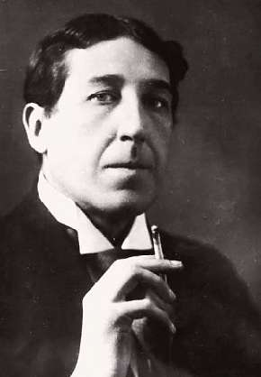

НЕМНОГО ХЭЙТА
Поэзия должна вызывать живое чувство — иначе на кой она нужна. Живое чувство бывает, как со знаком плюс, так и со знаком минус. У меня есть любимые поэты, есть и хейт-лист стихотворцев, от которых я морщусь. Одно из первых мест в нем занимает Игорь Северянин. Увидел, что сегодня годовщина его кончины, и сразу стал вспоминать покойника недобрым словом. (Про то что о мертвых или хорошо, или nihil — это только до сорокового дня, потом можно и отвести душу).
Для меня Северянин, певец нэрвнотрэпэтной эпохи является апофеозом манерной пошлости, самого несимпатичного из всех видов творческой деятельности.
Аффектация и манерность бывают талантливыми — как, скажем, в блоковском «Балаганчике», но стоит чуть-чуть перепрыскать одеколона, и выходит дешевая парикмахерская.
Игорь Северянин (1887–1941) и в жизни был личностью так себе. Эмигрировал в Эстонию, принял гражданство, вроде бы полюбил новую родину, стал переводить эстонских поэтов — казалось бы, честь и хвала. Но стоило Сталину захапать маленькую страну, и Северянин сразу Эстонию разлюбил — полюбил Большого Брата. Последний цикл стихов нашего утонченного декадента называется «Сталинский грезофарс».
Северянин дожил до немецкой оккупации. Если бы вскоре не умер, то, глядишь, и «Гитлеровский грезофарс» сочинил бы.
Наверняка я несправедлив. Но поэзия не арбитраж, справедливость ей не нужна, нужно неравнодушие.
Подумайте, кого из знаменитых поэтов вы на дух не выносите? Не знаю, кого вы назвали, но вы стопроцентно правы. Поэт, который вам не нравится, это никудышный поэт.